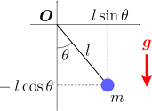
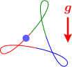
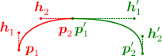

物体の運動を、拘束に沿った自由な座標
を使って記述したい。
自由な座標 での運動方程式()を求めたい
適当に曲げた針金を用意し、そこに物体を通した時（右図）、その物体の運動
が知りたい。これは、すでに第7章で扱った通常の拘束系であるが、1つ問題がある。これまでの章では、拘束条件が
という形の方程式で表されるとしていたわけだが、今の場合、適当に曲げた針金の形状を表す
を見つけることが困難なのである。
このような場合、右図のように、曲線上にパラメータ
を取ることにより、物体の位置を
で表すほうが簡単である。例えば2次元の振り子であれば、振れ角
が使えるし、一般の形状であれば、ベジェ曲線（以下の9.2節の【9.2-注1】）が使える。この
には拘束がかかっておらず自由な値をとれるので、
を、自由な座標と呼ぶことにする。この用語は一般的ではない。一般化座標と呼ぶことが多いが、こちらは文字通りデカルト座標に限定しない一般の座標系を考える際の用語であり、拘束条件とは無関係の文脈でも用いられる。
自由な座標
を決めれば、物体の位置
が求まる：
。ということは、物体の運動
は、
の時間変化
から求めることができる：
。
を計算するには、前章までで扱ってきた運動方程式
を、
に対する運動方程式：
の形に変形するだけである。これを、初期値
（任意の値をとれる）のもとで解けば
が求まり、
も分かることになる。
そこでこの章では、「運動方程式()の導出」と、それを用いた「物体の運動の計算」の2つの節に分けて議論を行う：
自由な座標での運動方程式物体の運動の計算
この章からは、これまでのような「力を求めれば運動方程式を使って運動が計算できる」という素朴な考え方から少し離れ、応用的な話題となる。
9.1自由な座標 での運動方程式
この節では、自由な座標
を用いた場合の運動方程式()を導出する。これは、単なる座標変換である。
運動方程式()を式()の形に変形したい
針金の場合、自由な座標
の成分は1つだけだが、曲面拘束や多粒子の場合には、複数成分になる。そこで、以後、ベクトル表記
を用いることにする。
の成分の数を自由度という。例えば、次節で扱う平面上の二重振り子（右図）の場合、自由度は2である。物体の位置
についても、これまで通り、複数の物体
がある場合も考慮して、
と書くことにする：
さて、前章で述べたように、拘束条件
のもとで、運動方程式は、以下の形で書ける：
右辺第2項は、拘束力
が拘束面と「垂直」であることを示している。
は求めることができ、具体的な形は前章の【8.2-注4】で与えた。この式()を変形して、
に対する運動方程式
の形に出来れば、
が計算できるようになる。これを求めたいわけである。
に対する運動方程式：式()
一般的に考えたいので、拘束が時間とともに変化する場合を含めることにする。その場合、座標
は、時刻
と自由な座標
の関数になる：
。例えば、第7章で扱った、動く中心点
を持つ振り子の場合だと
となる。
が自由な座標であることにより、任意の
に対して、
は拘束条件()を満たす：
拘束条件()は、
が自由な座標であるための必要条件なので、式()を求めるうえで必ず必要となる。そこでまず、この式の微分を計算する。微小量
に対し、
の変化
は、1次近似の範囲で
となることに注意して：
これが任意の
で成り立つので、赤字部分と緑字部分はそれぞれゼロとなる：
ただし、導出方法からも分かるように、第1式の
は、
を
の関数と見た時の
での偏微分である（
の関数と見た時ではない）。
式()の第2式により、運動方程式()の両辺に
の転置行列
を左乗すれば、拘束力
が消える：
複雑な式となる拘束力
（第8章の【8.2-注4】）が消えることは望ましい。しかも、この式の本数は、
の成分数と同じである。よって、上式は運動方程式
の形に変形することができるはずである。実際にそのような変形を行うと、以下の【9.1-注1】の式()のようになる。
【9.1-注1】自由な座標 に対する運動方程式：式()
座標
が、時間
と自由な座標
の関数
で表せる時、
に関する運動方程式は以下のようになる：
ただし、
は重力などの外力である。（拘束条件が時間に依存しない場合、緑字部分が消える。）
導出
運動方程式()と拘束条件()から、
に対する式()：（再掲）
が得られている。後は、
を
で表せばよい：
これを、式()に代入して、
の形にすれば、式()になる。
9.2物体の運動 の計算
以上で、必要な議論がそろった。この節では、まず、自由な座標を用いた場合の運動の計算方法についてまとめる。その後、振り子と二重振り子の場合について、自由な座標
を使った形で書き下す。これらについては、それぞれ第7章と第8章で、デカルト座標での運動方程式を示している。最後に、冒頭で触れた任意形状の針金上の運動の計算を行う。
物体の運動 の計算方法
物体の位置
は、自由な座標
から決まる。よって、
の時間変化
を求めればよい。
を求めるには、運動方程式()を、任意の初期値
のもとで解けばよい。式()は、通常の運動方程式と同様に2階の微分方程式なので、これまでと同じオイラー法（第3章の【3.1-注1】参照）で数値的に解くことができる。
【例題1】極座標での振り子の運動方程式：式()

2次元平面上の2次元振り子を考える。自由な座標
として、右図のような極座標をとる（おもりが垂れ下がった位置が
）。座標
およびその微分は
となるので、これらを運動方程式()：（
）
に代入すれば、極座標での運動方程式が得られる（緑字部分の項は消える）：
数値計算については、既に第7章で示した、デカルト座標で表したものと見かけ上変わらないので割愛する。
なお、3次元の場合の運動方程式を考えると、方位角を
として、同様の計算により以下のようになる：
式()に比べて複雑な式になり、
のところに特異性がある（分母が
になる）。一方、第7章で見たように、デカルト座標で表せば、2次元・3次元どちらでも同じ形になり、特異性もない。このように、自由な座標を使ったからといって必ずしも式が簡単になるわけではない。
【例題2】極座標での二重振り子の運動方程式：式()
2次元平面上の二重振り子を考える。4次元2拘束なので、自由度は
である。その自由な座標
を、右図のようにとる。座標
およびその微分は
となるので、これらを運動方程式()：（
）
に代入すれば、運動方程式が得られる：
（数値計算をする場合には、代入処理はプログラム上で行えばよいので、式()を書き下す必要はない。）数値計算については、既に第8章で示した、デカルト座標で表したものと見かけ上変わらないので割愛する。
【例題3】ベジェ曲線上のおもりの運動方程式

任意の形状の曲線を拘束条件とする場合（例えば右図）、ベジェ曲線を用いることができる（以下の【9.2-注1】）。外力として重力がかかっているとする。運動方程式を求めるには、
およびその微分：
式
を、運動方程式()：（
）\color inherit
に代入すればよい。特にきれいになるわけではないので、結果は割愛する。
数値計算を行うと、右図のようになる。
【9.2-注1】3次のベジェ曲線
 ベジェ曲線は、右図のように、2つの任意の点
の間を結ぶ曲線を表すために用いられる。具体的には、曲線の形状をコントロールするためのハンドルと呼ばれる2つの点
を用いて、以下のように定義される：（
）
ベジェ曲線は、右図のように、2つの任意の点
の間を結ぶ曲線を表すために用いられる。具体的には、曲線の形状をコントロールするためのハンドルと呼ばれる2つの点
を用いて、以下のように定義される：（
）
補足

複雑な曲線を補間する際には、曲線を分割し、各区間をベジェ曲線で補間するという方法がとられる。右図のように、2つのベジェ曲線が点
においてなめらかに接続する条件は、
と
が反平行になることである。